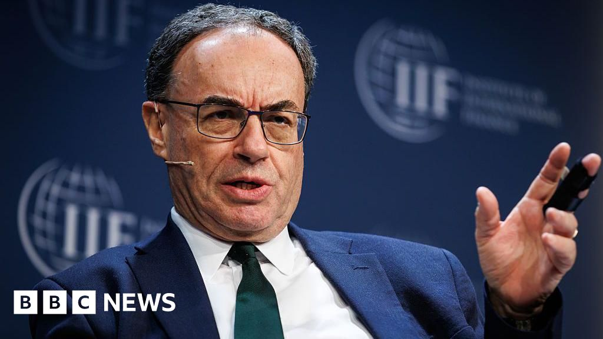

BBC Business Preview
Bank chief says US firm collapses ring 'alarm bells'
BBC Business - Original - None

The collapse of two US companies could be a sign of wider problems in the financial system and "alarm bells" were ringing, the governor of the Bank of England has said.
Andrew Bailey told a House of Lords committee that it was important to take the failure of car parts supplier First Brands and subprime car lender Tricolor "very seriously" - and drew parallels with the 2008 financial crisis.
He said it was unclear whether these were one-off issues, or a case of "the canary in the coal mine".
Mr Bailey also said the Bank of England was planning to run a "stress test" of private equity and credit firms.
The bankruptcies of First Brands and Tricolor have raised questions about the quality of deals in what is known as the private credit market - where companies arrange loans from non-bank lenders.
Mr Bailey said he did not want "to sound too foreboding at this point", but that "there is a lot we don't know about First Brands and Tricolour".
"I think the big question... is: are these cases idiosyncratic, or are they what I call the canary in the coalmine?
"Are they telling us something more fundamental about the private finance and private assets sector?
"I think that's still a very open question in the US. I think it's a question we have to take very seriously."
On the way loans were being made by private credit, Mr Bailey said there was starting to be "what used to be called sort of slicing and dicing and tranching of loan structures".
Reflecting on the tone of the conversation prior to the 2008 financial crisis, he said that back then there had been a belief that sub-prime mortgages were "too small to be systematic" but that this had been "the wrong call".
Last week, Jamie Dimon, the boss of US banking giant JPMorgan Chase, warned the failure of the two US firms could be a sign of more to come.
"My antenna goes up when things like that happen," he told analysts. "I probably shouldn't say this, but when you see one cockroach, there are probably more."
Also appearing before the House of Lords' financial services regulation committee, Sarah Breeden, the Bank's deputy governor for financial stability, said the Bank would be examining the private finance sector.
"We can see the vulnerabilities here," she said. "We can see parallels with the global financial crisis."
Wegovy maker's board shaken up as directors quit
BBC Business - Original - None

The company behind weight-loss jab Wegovy and diabetes drug Ozempic will have a boardroom clear-out, with seven board members including the chairman set to depart.
Novo Nordisk on Tuesday said chairman Helge Lund, vice chair Henrik Poulsen and five directors will not stand for re-election at an extraordinary investor meeting in November.
The departures came about after a disagreement between the board and its majority shareholder over its future governance.
Last month the firm issued a warning on profits due to increased competition from US rivals, and announced a cost-savings programme as it cut its profit growth forecast for the third time this year.
Widespread adoption of Novo Nordisk's Ozempic diabetes treatment, which is often used off-label as a weight loss drug, and Wegovy had boosted its share price to the point where in summer 2024 it was Europe's most-valuable company.
The departures come after a disagreement between board members from the pharmaceutical company and its majority shareholder, the non-profit Novo Nordisk Foundation, on the extent of changes needed.
Outgoing chair Mr Lund said that the Novo Nordisk board had proposed bringing in several new board members to add new skills, but the Novo Nordisk Foundation "wanted a more extensive reconfiguration".
The Foundation successfully pushed for the removal of former chief executive Lars Fruergaard Jorgensen in May.
The current chairman of the Novo Nordisk Foundation, Lars Rebien Sorensen, who served as the pharma's chief executive from 2000 to 2016, is being put forward to replace current chairman Mr Lund, the foundation said.
Mr Sorensen said the pharmaceutical company had been "too slow in recognising fundamental market changes" as the use of its drugs became mainstream and competitors launched rival treatments.
The claim involves 3,000 people and focuses on internal memos and scientific reports, seen by the BBC.
Dad-of-two Martin Fletcher said he managed to lose 10 stone in 13 months through daily exercise.
The council has approved the work after production at the Ulverston site ended earlier this year.
Eight Pharmacies in Oxfordshire have closed since 2023 and those still in business want more funding
Copyright 2025 BBC. All rights reserved. The BBC is not responsible for the content of external sites. Read about our approach to external linking.
Warner Bros Discovery explores sale citing buyer interest
BBC Business - Original - None

Chief executive David Zaslav said the board would review its options in light of the bids, as it looks to identify the "best path ... to unlock the full value of our assets".
Players such as David Ellison's Paramount Skydance are among the firms reported to be interested in an acquisition.
On Tuesday, Warner Brothers rejected a bid from Paramount that valued the firm at nearly $24 a share, according to Reuters, which cited a source familiar with the matter.
Its shares were trading at roughly $20 near the close of the stock market in New York.
The media industry has been rapidly consolidating, as it responds to pressures from the rise of streaming and decline in traditional pay TV audiences and advertising.
Warner Brothers Discovery is itself the result of a merger completed just three years ago, which united Warner Media, previously part of AT&T, with Discovery, owner of networks such as the Food Network and HGTV.
But the deal left the company heavily burdened with debt. It has also been losing money.
Earlier this year Mr Zaslav said he was preparing a break-up of the business, which would split its streaming operations from its traditional cable networks.
Analysts say the company's rich library, stocked with franchises that include Harry Potter, Lord of the Rings and Looney Tunes, makes it attractive for firms looking to bulk up their online streaming catalogues.
But the appeal of the cable networks is less obvious.
Warner Brothers Discovery board chairman Samuel Dipiazza said the company still believed in the merits of its plan to split the assets but would now review other options, including sale of all or parts of the business.
The reported interest of Paramount Skydance, only weeks after it completed its own merger, has drawn particular attention, signalling the ambitions of boss David Ellison, son of Oracle boss Larry Ellison.
A potential sale could face government review of competition and anti-trust implications.
Analysts believed the Paramount bid had stood a strong chance of government approval, citing the Trump administration's relatively hands-off approach to mergers.
They also highlighted the Ellison family's apparent close ties to President Donald Trump, noting that his administration had blessed deals involving their companies, including Skydance's takeover of Paramount.
Highest government borrowing in September for five years
BBC Business - Original - None

Chancellor Rachel Reeves is widely expected to raise taxes in November's Budget in order to meet her self-imposed rules for government finances.
September's figure was slightly less than analysts' expectations of £20.8bn, but was just above the £20.1bn that had been projected by the government's official forecaster, the Office for Budget Responsibility (OBR), in March.
The OBR is set to update its forecasts next month - laying out how much of a shortfall the government will need to make up if it is to meet its own tax and spending rules by the end of the current parliament.
Speaking to the BBC's Today programme, Capital Economics chief economist Paul Dales said the chancellor would "love tax receipts to be higher" but that it would depend on faster growth in the economy.
Capital Economics is projecting that the government will have to raise £27bn in the Budget, with "higher taxes on households having to do the heavy lifting".
Nick Ridpath, research economist at the Institute for Fiscal Studies, also pointed out the challenges facing the chancellor, citing "high debt interest spending, tiny headroom and a looming productivity downgrade" as factors that could make things "even trickier".
While the focus remains on what measures the chancellor might take in the Budget, on the financial markets UK government borrowing costs have been easing over the past couple of months.
Ahead of the Budget, the government has announced a number of measures it is taking to try to boost economic growth.
The ONS figures showed that although tax income in September was higher than last year, in part due to the increase in employers' national insurance contributions, spending also increased.
This was partly due to pay rises and inflation increasing the government's day-to-day running costs, as well as inflation-linked increases to state benefits.
The government also had to pay £9.7bn in debt interest, which was up by £3.8bn from the same month last year.
Responding to the figures, Chief Secretary to the Treasury James Murray said the government would "never play fast and loose with the public finances".
He reiterated the government's aim of bringing down borrowing, to be rid of "costly debt interest, instead putting that money into our NHS, schools and police".
But shadow chancellor Mel Stride said that borrowing was "soaring under this Labour government".
"Rachel Reeves has lost control of the public finances and the next generation are being saddled with Labour's debts," he said.
Reeves plans to 'scrap needless form filling' for firms
BBC Business - Original - None

Chancellor Rachel Reeves has said she plans to scrap "needless form filling" in a bid to boost business growth.
Speaking at a regional investment summit in Birmingham, the chancellor said the reforms would boost growth and "make the UK a top destination for global capital".
Ahead of the Budget next month, Reeves acknowledged that "for too many people" the economy was "not working as it should".
The government has been criticised by firms who say increased employers' National Insurance contributions and the Employment Rights Bill add to the burdens facing businesses.
The measures include plans to reform the company merger process. New "simpler corporate rules" will remove requirements for small businesses to submit lengthy reports to Companies House, the Treasury said.
The changes will apply to over 100,000 firms such as family-run cafes.
Earlier on Tuesday, Business Secretary Peter Kyle defended Labour's approach to business, telling the BBC the government would implement changes in a way that is "pro-worker and pro-business".
The measures could include temporary exemptions for new AI software from regulation, Kyle told the Today programme.
"In certain circumstances when new AI technology is being developed, we can remove it from all regulation for a period of time to give it the space to really grow, to develop, to be commercialised really rapidly," he said.
This, he said, would enable the tech to be used "to benefit the health, the wealth, the education of our nations".
"We'll use that in a very targeted, a very safe way."
The government has pledged to reduce the administrative cost of regulation by a quarter by the end of this Parliament.
Kyle said the previous government "did not do enough on deregulation" despite pledging to do so, particularly after Brexit.
"If you look at some of the reporting that needs to be done by directors, for example, directors' reports to Companies House, I'm eliminating a great deal of that today because some of it is just so unnecessary," he said.
But pushed on whether the government's changes to employment rights would add costs to businesses, Kyle insisted that the changes would be fair for both employers and employees.